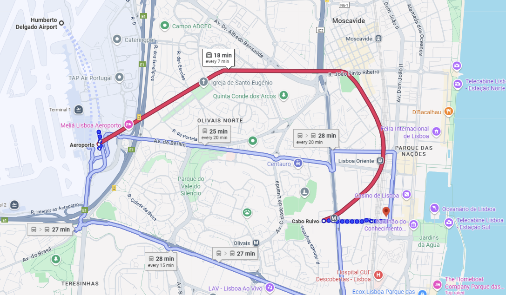
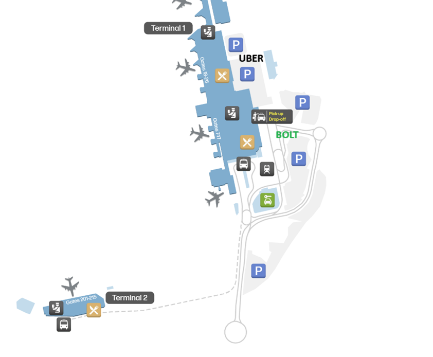

Watch these team update recordings and review the slides before arriving in Lisbon. Come prepared so we can hit the ground running.
Wednesday March 4 — Load-in day. No scheduled programming. Arrive, settle in, and prepare for the week.
Check-in details and hotel information will be shared via the coordination team.
The PS venue at One 16 will be in setup mode throughout the day. Lou and sub-vendors managing load-in. Not open to attendees.
Since this year's venue is quite close to the airport and Lisbon Airport is located within the city, there will be no organised transfers. See below for the easiest ways to get to Ikonik Lisboa and Eurostars Universal Lisboa.


Breakfast is included every day and served at both hotel restaurants (Ikonik Lisboa & Eurostars Universal).
We open by seeing what our family has been building, then weave it into the bigger picture.
The leadership panel lays out where we're going, reveals the testnet, and takes questions.
Frame: "Things you can point to when people ask 'what does Logos actually do?'"
Decisions needed before March 5
What demos are ready that don't duplicate PS Day 1? Who owns them?
Each stream lead (Eng, EcoDev, Comms, Nimbus, Status) prepare 2–3 key questions for S4.
Which 2–3 of 12 confirmed stewards present? Santi/Amelia coordinating.
Video? Reading? Collective moment?
Who runs S4 table discussions? External facilitator needed?
Cards? Digital? Who synthesizes for offsites?
Confirm scope + budget with Lou.
Who prepares the walkthrough/map for S4 Bridge to PS?
Which teams get the Saturday morning PS venue window?
Thursday March 5 — All meals are provided on All-Hands day.
Friday March 6 · Unconference across 9 zones in two buildings · 09:00–20:00
Friday March 6 — Breakfast at the hotel. Lunch and dinner are open / self-organised.
Morning sessions at the hotel, followed by the music & arts festival from 13:00–03:00 at One 16. Full hotel rooms are available all day — if the festival isn't your thing, come hang out and use the space however you like.
Internal Logos hacking session. Builders and leads across the stack in one room. Try stuff, build on top of Logos, break things, give feedback.
Low degree of organisation, steep learning curve, large optionality and freedom. Come with an idea, join someone else's experiment, stress-test assumptions, or just get familiar with the stack. You'll have the option to submit your project for a lightweight showcase.
Contact Martin for questions.
At One 16. Schedule to be confirmed.
Sunday March 8 – Monday March 9. Stream-level working sessions and cross-team collaboration. Start ≥10:30 AM Sunday (recovery from Day 2 festival).
The off-sites are mostly self-organised by teams based on their cross-collaboration needs. A shared Google Sheet has been started to coordinate planned sessions and estimated times. Contact Hanno for edit access if you'd like to add your plans or join something already listed.
For floorplans, room photos, and video walkthroughs, check the Coda companion doc.
Sunday–Monday — Breakfast and lunch at the hotels. Dinners are self-organised.
Tuesday March 10 — No scheduled programming. Safe travels.
Check out is until 12:00 PM. Confirm with the hotel front desk or coordination team.